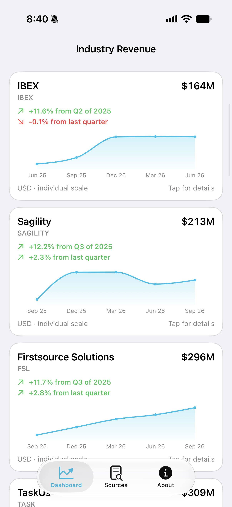
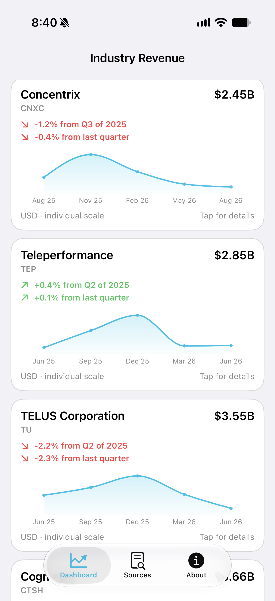

The upcoming interactive App Clip lets you choose a company, explore five reported quarters, and open the official sources behind each figure.
Invited testers will open the App Clip through its experience in TestFlight when the beta build is available. Public App Clip links will become available after Apple approves a future release.
A preview of the full app
The screens below show the full app's dashboard. Each company uses an individual chart scale; figures are verified and updated with app releases.


Questions or support? Contact CH@ChristophHalverson.com.